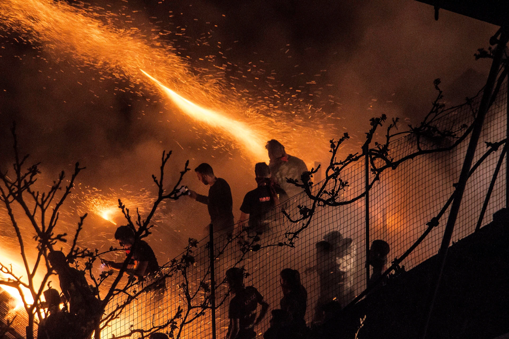

아직 펼치지 않은 카드어둠 속에 번지는 불 · 3키오스섬 부활절 ‘로켓 전쟁’그리스 키오스섬의 한 마을에서는 부활절 밤, 두 교회가 서로를 향해 무엇을 쏘아 올릴까요?부활절 밤에 두 교회가 불꽃 로켓 시합을 한대!
해마다 정교회 부활절 전날 밤그리스 키오스섬 브론타도스
키오스섬 부활절 ‘로켓 전쟁’
그리스 키오스섬의 마을 브론타도스, 정교회 부활절 전날 밤. 두 언덕 위 두 성당 사이로 손으로 만든 로켓 수천 발이 오가는 동안, 성당 안에서는 부활 예배가 이어져요. 2026년 그날 밤의 차례대로 무대에 하나씩 놓아 보세요.
부활절 전날 밤, 그리스의 한 마을에서는 두 교회 사람들이 서로 불꽃 로켓을 쏜대. 진짜 싸움은 아니야! 그 밤을 하나씩 놓아 볼까?
검수 전 시안이에요(기준서 2판 · 초벌). 장면에는 키오스 시의 안내와 2015·2016·2026년 보도에 있는 것만 옮겼고, 시작에 관한 이야기는 ‘전해진다’고 밝혔어요. 로켓 만드는 법은 적지 않았어요. 상상은 ‘눈 감고 상상해 보기’에만 썼어요.
시안 확인용카드 단계 미리 보기
1
철망 뒤에서
2015년 4월 11일 밤 11시쯤, 그리스 키오스섬의 브론타도스. 철망 너머로 불꽃이 쏟아지고, 사람들이 그 뒤에 서 있어요. 사진을 찍은 사람은 이들을 ‘로켓 전사들’이라고 불렀어요.
브론타도스에는 큰 본당이 둘 있어요. 성 마르코 성당과 성모 성당(파나기아 에리티아니)이에요. 해마다 정교회 부활절 전날 밤, 두 본당 사람들은 손으로 만든 로켓을 서로의 성당 쪽으로 쏘아요. 이것을 ‘로켓 전쟁’(루케토폴레모스)이라고 불러요.
로켓을 쏘는 팀은 로켓을 만드는 사람들이기도 해요. 적지 않은 재료값도 스스로 내요. 팀마다 역사나 전통, 또는 대장의 별명에서 따온 이름이 있어요.
부활절 전날 밤, 두 교회 사람들이 서로 불꽃 로켓을 쏜대. 부활절 밤을 아주아주 시끄럽게 맞는 거래.
물어보기사람들이 왜 철망 뒤에 서 있을까?
2
두 언덕의 밤
두 성당은 400미터쯤 떨어진 두 언덕 위에 서 있어요. 과녁도 정해져 있어요. 성모 성당 쪽은 성 마르코 성당의 둥근 지붕과, 정문 위에 걸린 사자와 함께 있는 마르코 이콘을 겨눠요. 성 마르코 쪽은 성모 성당의 시계를 겨눠요.
2026년 4월 11일, 그날 밤의 차례대로 무대에 하나씩 놓아 보세요.
2026년에는 주최 측이 말하기로 2만 발쯤 쏘았어요. 미리 정한 자리에서만 쏘았고, 사람들이 안전하게 오갈 수 있도록 중간중간 쉬기도 했어요.
두 교회가 마주 보는 언덕 위에 있어. 하나씩 놓아 보자. 마지막엔 종이 울려!
물어보기밖에서 로켓이 쉬익쉬익 날아다닐 때, 교회 안에서는 어떤 소리가 들릴까?
3
대포에서 로켓으로
위 판화는 1882년 영국 책에 실린 키오스섬이에요. 이 풍습이 언제 시작되었는지는 분명하지 않아요. 섬이 오스만 제국의 다스림을 받던 때로 거슬러 올라간다고 전해져요. 두 본당의 아이들이 돌을 던지며 ‘전쟁’ 놀이를 하던 데서 시작되었다고 말하는 사람들도 있어요.
전해지는 이야기로는 처음에는 진짜 대포를 썼는데, 1889년 오스만 관리들이 대포를 막자 로켓으로 바뀌었다고 해요. 키오스 시의 안내는 그해 첫 로켓을 불꽃 기술자가 이탈리아 방식으로 만들었다고 적어요.
1900년 무렵부터는 본당 사람들이 직접 로켓을 만들어 함께하기 시작했어요. 독일 점령기에는 거의 끊길 뻔했고, 군사 정권 때는 멈췄다가 1970년에 다시 열렸어요. 1950년대부터는 성당 가까운 들판에서 맞은편 성당을 겨눠 쏘게 되었어요.
옛날에는 진짜 대포를 쏘았대! 대포를 못 쓰게 되자 로켓으로 바뀌었대.
물어보기사람들은 왜 부활절 밤을 이렇게 시끄럽게 맞았을까?
4
다음 날 아침
다음 날, 종탑에 맞은 자국을 세어 이긴 쪽을 가린다고 해요. 그런데 두 본당은 늘 저마다 자기가 이겼다고 말해요. 깨진 유리창과 지붕 기와 같은 작은 피해도 남아요.
“이 전쟁에는 이긴 쪽도 진 쪽도 없어요. 사람들은 악수하고, 내년에 다시 만나자고 약속해요.”
키오스 시 관광 안내 ‘로켓 전쟁’ · 영어를 이 안내서가 우리말로 옮김
모두가 이 풍습을 반기는 것은 아니에요. 2016년에는 집이 망가진다며 소송을 하겠다는 주민들이 있어 열리지 않았고, 2017년부터 시간과 로켓 수에 규칙을 두고 다시 열렸어요. 2026년에는 부활절을 앞두고 로켓을 만들던 작업장에 불이 나 네 사람이 화상을 입었고 일곱 사람이 체포되었어요. 그해 로켓 전쟁은 성토요일 오후에야 열기로 정해졌어요.
다음 정교회 부활절 전날 밤은 2027년 5월 1일이에요.
다음 날 아침, 두 교회는 서로 “우리가 이겼어!” 한대. 그리고 악수하고 내년에 또 만나자고 약속해.
물어보기둘 다 이겼다고 하면, 누가 이긴 걸까?
눈 감고 상상해 보기
깜깜한 언덕, 화약 냄새가 바람에 실려 와요. 쉬익, 쉬익, 머리 위로 불빛 줄이 수없이 지나가고, 철망에 무언가 탁탁 부딪혀요. 연기가 골짜기를 채워요. 철망 안쪽 성당에서는 부활의 노래가 이어지고, 자정의 종이 울리기 시작해요.
눈을 감아 봐. 쉬익! 쉬익! 머리 위로 불빛이 날아가. 탁탁, 철망에 부딪히는 소리. 그런데 교회 안에서는 노래가 들려. 땡, 땡, 자정의 종이야!
나의 자리
로켓이 쏟아지는 동안에도 철망 안쪽에서는 부활 예배가 이어져요. 둘레가 아무리 시끄러워도, 내가 지키고 싶은 자리는 어디인가요?
밖이 아주 시끄러울 때, 너는 어디에 있으면 마음이 편해?
마음에 닿는 한 줄을 고르거나 직접 써 보세요. 한 줄을 남기면 이 자리의 도장이 찍혀요. 이 기기에만 저장돼요.
더 깊이
궁금한 칸만 펼쳐 읽어도 괜찮아요.
기록마다 다른 점
언제부터 위키백과와 글로벌 보이스는 오스만 제국 때로 거슬러 올라간다고 적고, AP 통신은 19세기에 시작되었지만 더 오래되었을 수도 있다고 적어요. 키오스 시의 안내는 첫 로켓이 1889년에 나왔다고 적어요.
몇 시에 2026년 보도는 자정 조금 전부터 수천 발이 날았다고 적고, 다른 기록들은 자정 부활 예배 때 시작된다고 적어요.
누가 이겼나 다음 날 종탑에 맞은 자국을 센다는 기록도 있고, 로켓이 너무 많아 다음 날 셀 수 없다는 기록도 있어요. 키오스 시의 안내는 이 전쟁에 이긴 쪽도 진 쪽도 없다고 적어요.
함께 읽는 말씀
말씀은 뜻만 옮기고, 본문은 대한성서공회 개역개정으로 이어 드려요.
고린도전서 15장 54~57절 죽음이 생명에 삼켜졌다며 “죽음아, 너의 승리가 어디 있느냐” 하고 묻는 말씀이에요. 키오스 시의 안내는 부활절 밤의 로켓이 삶이 죽음을 이긴 것을 나타낸다고 적어요.
직접 가 보기
확인한 날 · 2026년 11월 22일 · 바뀌기 쉬운 정보라 정기적으로 다시 확인해요
브론타도스는 키오스 시내 북쪽에 있어요. 다음 정교회 부활절 전날 밤은 2027년 5월 1일이에요.
해마다 그 무렵에 열지 말지가 정해져요(2016년에는 열리지 않았고, 2026년에는 성토요일 오후에야 정해졌어요). 로켓이 떨어지는 곳 가까이는 위험하니, 그해의 안내를 꼭 따라 주세요.
그날 밤의 차례 금박
2026년 그날 밤의 차례(철판과 철망, 함께 걷기, 부활 예배, 로켓, 자정의 종)대로 다 놓으면 카드에 금박이 입혀져요.
철판과 철망 → 함께 걷기 → 부활 예배 → 로켓 → 자정의 종 차례로 놓기
아이와 함께 채색
아이와 함께 ‘영화처럼 보기’를 끝까지 보면 카드가 채색돼요.
아이와 함께 ‘영화처럼 보기’를 끝까지 보기
근거 보기 (10)
- 키오스 시 관광 안내: 로켓 전쟁 — 두 본당, 과녁(성 마르코의 둥근 지붕과 사자 이콘, 성모 성당의 시계), 아이들의 돌 던지기 이야기, 1889년 첫 로켓, 1900년부터 본당 사람들이, 독일 점령기와 군사 정권, 1970년, 1950년대 들판, 팀이 직접 만들고 재료값을 냄, 깨진 창과 기와, 이긴 쪽도 진 쪽도 없음, 삶이 죽음을 이김
- 위키백과(영어): Rouketopolemos — 두 언덕, 약 400미터, 철판과 철망, 오스만 시대 전설, 1889년 대포 금지, 2016년 취소와 2017년 규칙, 다음 날 자국 세기, 저마다 이겼다고 함
- 글로벌 보이스(2016.5.4): 2016년 취소(주민들의 소송 경고), 자정 부활 예배 때, 다음 날 셀 수 없음
- AP 통신(글로벌 뉴스 게재, 2015.4.12): 종이 울릴 때, 늦은 밤 예배에 들어가는 사람들, 성당과 집을 두른 철망, 19세기
- 프로토테마(2026.4.12): 저녁 6시 두 본당 팀의 함께 행진, 자정 조금 전 수천 발, 일곱 명 체포, 중간 휴식, 성토요일 오후에 확정
- 유로 위클리 뉴스(2026.4.14): 미리 정한 발사 자리, 바닷가 행진, 맞은 자국을 셈
- 로이터(아틀라스 뉴스 게재, 2026.4.12): 주최 측 추산 2만 발, 작업장 화재로 네 명 화상·일곱 명 체포, 규모를 줄임
- 그리스 관광청(Visit Greece): 키오스섬의 부활절 — 2026년 4월 11일 저녁, 두 큰 본당
- 위키미디어 공용: 앞면 사진 정보(2015년 4월 11일 22시 56분, ‘로켓 전사들’)
- 대한성서공회 개역개정: 고린도전서 15장
그림·사진·소리 출처
‘처음 만나는 기독교 문화’의 깊은 카드예요. 무대 그림은 이 안내서가 그렸어요. 카드 단계와 남긴 글은 이 기기에만 저장돼요.